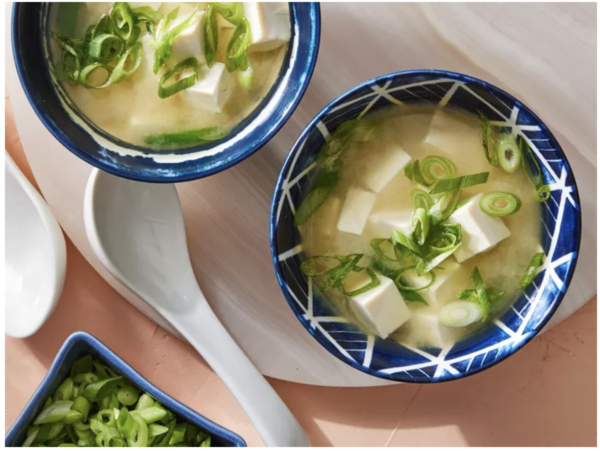

This photo was taken by DOTDASH Meridith Food Studios
Description
This miso soup is rich in umami flavor.
Use more dashi for a stronger broth, and choose white, yellow, or red miso depending
on your taste—white is mild, yellow is balanced, and red is bold and salty.
Ingredients
This is directly from "Allrecipes.com"
1 (1 pound) rib eye steak
salt and freshly ground pepper to taste
2 Tablespoons garlic and herb salted butter
(such as Kerrygold®), plus more for serving (optional)